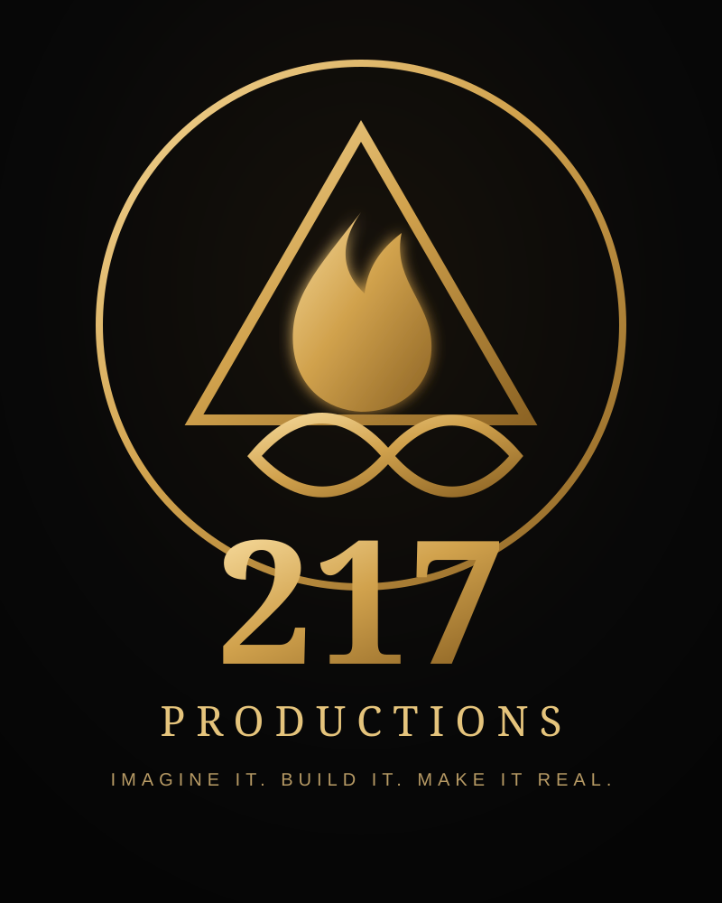

1
Download one file
After purchase, you receive the interactive Tutor launcher file.
No long video course. No giant manual. Add one Tutor file to ChatGPT, type START, and learn through guided practice inside the product you are trying to master.
Founding beta release. Feature availability can vary by ChatGPT plan, device, region, workspace, and rollout.

After purchase, you receive the interactive Tutor launcher file.
Open a new ChatGPT conversation, use the attachment control, and choose the file.
The Tutor begins the lesson and adapts as you answer, practice, and ask questions.
You do not have to learn another course platform before you can learn ChatGPT. The Tutor teaches through the real interface, real tools, and hands-on practice.
The goal is not to memorize terminology. The goal is to become capable of doing useful work independently.
Starts with what you can actually see on your screen and builds from there.
You learn by answering, trying, correcting, and using ChatGPT while the Tutor guides you.
If a feature is not available on your account, the Tutor adapts instead of pretending it is there.
Start with ChatGPT. Learn the skills. Finish real work.
Get the TutorNo separate training app is required. You use your own ChatGPT account and the Tutor file you receive.
The founding beta is intentionally simple: one interactive Tutor launcher file, plus clear start instructions.
You need to be able to save the file and choose it from ChatGPT’s attachment control. The delivery instructions show the steps clearly.
No. Features can vary by plan, device, region, workspace settings, and rollout. The Tutor is designed to ask what you actually see and adapt.
No. This is an independent educational product from I Am 217 Productions. It is not affiliated with, sponsored by, or endorsed by OpenAI.
The final founding-beta refund policy will be posted before paid checkout is enabled.
Independent product notice: ChatGPT and OpenAI are trademarks of OpenAI. I Am 217 Productions is independent and is not affiliated with, endorsed by, or sponsored by OpenAI.